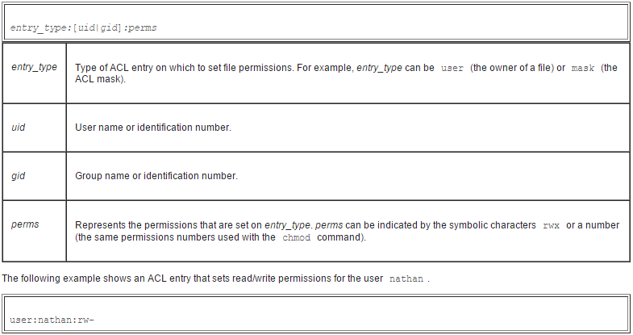

REF LINKs:
Access Check Algorithm
A process requests access to a file system object. Two steps are performed. Step one selects the ACL entry that most closely matches the requesting process. The ACL entries are looked at in the following order: owner, named users, (owning or named) groups, others. Only a single entry determines access. Step two checks if the matching entry contains sufficient permissions.
A process can be a member in more than one group, so more than one group entry can match. If any of these matching group entries contain the requested permissions, one that contains the requested permissions is picked (the result is the same no matter which entry is picked). If none of the matching group entries contains the requested permissions, access will be denied no matter which entry is picked.
The access check algorithm can be described in pseudo-code as follows.
If- the user ID of the process is the owner, the owner entry determines access
else if- the user ID of the process matches the qualifier in one of the named user entries, this entry determines access
else if- one of the group IDs of the process matches the owning group and the owning group entry contains the requested permissions, this entry determines access
else if- one of the group IDs of the process matches the qualifier of one of the named group entries and this entry contains the requested permissions, this entry determines access
else if- one of the group IDs of the process matches the owning group or any of the named group entries, but neither the owning group entry nor any of the matching named group entries contains the requested permissions, this determines that access is denied
else- the other entry determines access.
If- the matching entry resulting from this selection is the owner or other entry and it contains the requested permissions, access is granted
else if- the matching entry is a named user, owning group, or named group entry and this entry contains the requested permissions and the mask entry also contains the requested permissions (or there is no mask entry), access is granted
else



END